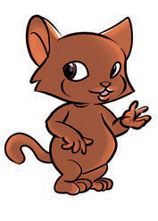

Chapter Three
Creating works of art

I participate in handcraft work.
Handcraft
Handcraft is a work of art made by our hands.Some of the artworks created by our hands include knitting, sewing, moulding, carving, decorating, drawing and weaving.
Knitting
Knitting is an activity involving the use of thread to make fabric, socks, hats and sweaters.This work of art uses thread and special needles or sticks to make them.